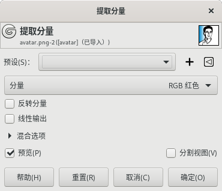
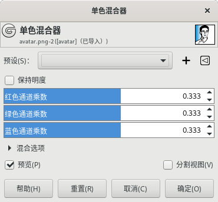
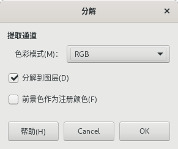

⇨分量 Components
通道混合器 Channel Mixer
颜色⇨分量⇨通道混合器
此命令会混合RGB通道的值。
预设：此选项是通用参数，详细说明请参考图层⇨透明➡对话框通用参数。
红色通道：对红色通道进行混合。
红色通道中的红色：可以调整红色通道中红色的量，范围-2到2。
红色通道中的绿色：可以调整红色通道中绿色的量，范围-2到2。
红色通道中的蓝色：可以调整红色通道中蓝色的量，范围-2到2。
绿色通道/蓝色通道：同理。
保持明度Luminosity：通道混合器的计算可能会导致数值过高，图像过于清晰。此选项在保持它们之间良好的视觉比例的同时，降低了颜色通道的亮度luminosities。因此，您可以在不改变整体亮度luminosity的情况下调整颜色的相对权重。
混合选项/预览/分割视图：这三项是通用参数，详细说明请参考图层⇨透明➡对话框通用参数。
提取分量 Extract Component
 颜色⇨分量⇨提取分量
此命令可以提取指定的分量，比如提取RGB模式中的红色通道分量。
预设：此选项是通用参数，详细说明请参考图层⇨透明➡对话框通用参数。
分量：选择要提取的分量，默认为RGB红色：所有颜色中含有红色分量的像素都将被提取，以创建灰色像素；得到的灰色像素的值是红色通道的值。
例如，一个90,22,17的RGB像素，提取RGB红色分量后，会将得到一个90,90,90的灰色像素。
反转分量：反转提取的分量
线性输出：使用线性输出代替gamma校正。
单色混合器 Mono Mixer
 颜色⇨分量⇨单色混合器
预设：此选项是通用参数，详细说明请参考图层⇨透明➡对话框通用参数。
保持明度Luminosity：单色混合器 计算可能会导致数值过高，图像过于清晰。这个选项在保持它们之间良好的视觉比例的同时，降低了颜色通道的亮度luminosities。因此，您可以在不改变整体亮度luminosity的情况下改变颜色的相对权重。
红色通道乘数/绿色通道乘数/蓝色通道乘数：适用于各个通道的系数，范围-5到5。
混合选项/预览/分割视图：这三项是通用参数，详细说明请参考图层⇨透明➡对话框通用参数。
分解 Decompose
 颜色⇨分量⇨分解
此命令可以把图像的各个通道分离出来，分离后可以选择作为图层或者图像存在。
分解到图层
如果勾选此项，那么会得到的一个图像，图像的图层由原图像的通道创建，原图像通道数量=新图像图层数量；如果不勾选此选项，那么，所有通道都会创建成一个新图像。默认被勾选。
色彩模式
RGB：选择RGB后，会创建一个新图像，新图像有三个图层(R/G/B)和两个通道(灰度/alpha)。
因为分解后生成的图像可以再重新合成为RGB图像，所以，您可以在分解生成的图像的图层上工作(相当于在RGB图像的RGB通道上工作)，最后再重新合成RGB图像。
RGBA：与RGB类似，不过会增加一个alpha图层，填充原图像的透明值。
HSV：把图像分解为三个灰度层，一个是色调(色相)层，一个是饱和度层，另一个是明度Value层。
虽然色调(Hue)层是灰度的，但它确实代表了色相。在色相环中，白色和黑色是起点和终点，并且是重叠的。它们在圆环的顶部代表红色。灰色中间级别对应于圆环上的中间色调：深灰色到橙色，中灰色到绿色，浅灰色到洋红色。
HSL：与HSV类似，只不过第三个图层是亮度图层Lightness。
CMY：把图像分解成三个灰度层，一个是黄色(Y)，一个是洋红(M)，另一个是青色(C)。此选项针对印刷使用。
CMYK：比CMY多了一个黑色(K)。此选项针对印刷使用。
Alpha：此选项会提取存储在Alpha通道中的透明度，并将其保存在一个单独的图像中。完全透明的像素为黑色，完全不透明的像素为白色，灰色部分是部分透明。
LAB：此选项将图像分解为三个灰度层，图层 L 代表亮度Luminance，图层 A 代表绿色和红色之间的颜色，图层 B 代表蓝色和黄色之间的颜色。
LAB分解是一个Luminance-Color家族的色彩模型。一个通道用于明度Luminosity，而另外两个通道用于颜色。
YCbCr：GIMP 中有四种不同的 YCbCr 分解方式。每个选项都将图像分解为三个灰度层，一个层为亮度Luminance: luma，另外两个层为蓝色差blueness和红色差redness。
YCbCr颜色模型也叫YUV，现在用于数字视频(最初用于PAL模拟视频)。它是基于人眼对亮度最敏感，色彩次之的理念。
前景色作为注册颜色
指定前景色作为定位颜色，专门用于印刷/印后裁切。
您可以在图像上画一个标记，填充前景色，分解后，每个图层均可见，可以作为四色套准标记或裁切标记。
合成 Compose
重新组合 Recompose
此命令从之前分解的分量直接重建图像，不需要设置参数。
执行此命令前，如果被分解图像已经关闭，则会提示无法组合。
如果图像不是分解得到的图像，则此菜单项会显示为灰色不可用。
此命令特别适合在不同的色彩空间/模式下修改图像：
比如想编辑某个通道，可以把原RGB图按RGB色彩模式分解，生成的新图像，图层就是原图像的通道，之后针对各个图层分别进行编辑(相当于编辑原图像的通道)，然后再组合回原图；
再比如想在LAB模式下编辑图像，可以把原RGB图按LAB色彩模式分解，生成的图像，通道变成图层，对图层进行编辑，之后再重新组合为RGB，这种编辑过程在RGB模式下是无法实现的。